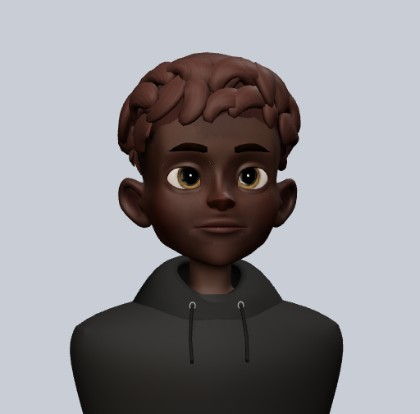
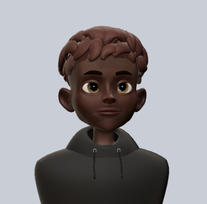
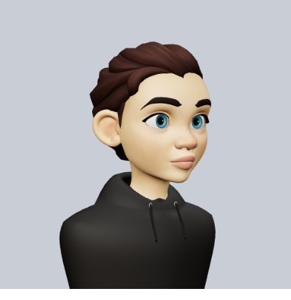
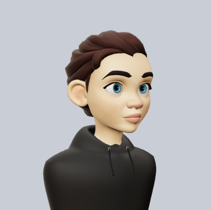

Ce que j’attends de toi : 31 points, tous en images
06/10/2026, 20:00. Tout ce qui attend ta réponse, réuni ici. Ça vient de mes deux tours, du tour du Codex et des PR en attente. Chaque point a sa vraie capture du banc à gauche et la proposition à droite. Les points 1 à 4 sont les plus urgents (règles d’Apple, coût, confidentialité).
Supprimer son compte après 24 h de session
Passé 24 h de session, le serveur refuse la suppression, et l’écran dit seulement « Réessaie ». Ça touche presque tous les vrais comptes. Or Apple exige que la suppression aboutisse. Sous 24 h, rien ne change : un toucher supprime, comme tu l’as décidé (point 144).
Proposé : une étape avec un code reçu par e-mail pour confirmer que c’est toi, comme à la connexion, puis la suppression. Oui : je fusionne #4004, sa CI est verte.
Ton compte sera supprimé et tu seras déconnecté. Cette action ne peut pas être annulée.
Impossible de supprimer le compte pour le moment. Réessaie.
Pour confirmer que c’est bien toi, on va t’envoyer un code à ava.martin@exemple.com.
Entre le code envoyé à ava.martin@exemple.com.
Les notifications promotionnelles sont allumées d’office
« Actualités de Take » (nouveautés et recommandations) est activé par défaut pour tout le monde, côté serveur. Aucun écran ne demande l’accord pour la promotion. La seule question posée parle des réponses et des mentions (« Tu veux savoir quand on te répond ? »). Le reste n’est qu’un interrupteur, rangé dans Paramètres → Notifications. La règle App Store 4.5.4 interdit les notifications publicitaires sans accord explicite. Aujourd’hui, l’envoi des campagnes est encore éteint côté serveur : le risque arrive le jour où on l’allume. Trouvé à mon 2e tour, vérifié dans le code.
Proposé : éteint par défaut, et une question claire au bon moment, par exemple après la demande de notifications. Ce n’est pas un choix de goût : c’est à régler avant d’allumer les campagnes.
Le préchargement du fil
Pour que tout s'ouvre instantanément, l'app lit d'avance tout le take où tu t'arrêtes une demi-seconde, et télécharge les photos de toute la page, même en 4G. À 3 millions d'utilisateurs, ça fait environ 108 millions de lectures par jour en plus, et beaucoup de data mobile. Ta règle actuelle : « tout précharger avant d'y arriver ».
Proposé : garder ta règle (instantané, mais cher) ou alléger comme à droite. Je ne touche à rien sans ton avis.
« Qui peut le voir » promet une confidentialité qu’il ne donne pas
Ces cases choisissent où le take apparaît : le fil Amis, la carte ou Takes. Elles ne limitent pas qui peut le lire par lien ou sur ton profil. Et cocher Takes rend le take public, même si ton compte est réglé sur « Amis » dans Confidentialité (vérifié dans le code).
Proposé : « Où publier » à la place de « Qui peut le voir », dans les six langues.
Le contexte obligatoire pour Takes ne se voit presque pas
Si tu coches Takes et que tu n'écris pas de contexte, « Publier » reste gris, sans un mot. Le seul indice est le texte du champ, en gris pâle à 2,7:1, donc presque illisible. Vu au banc.
Proposé : le bouton dit ce qui manque, « Ajoute un contexte », et l'indice du champ passe au gris secondaire de l'app (5:1).
« Publié » alors que le take attend sa vérification pour Takes
Un take demandé pour Takes n'y entre qu'après la modération. La carte de publication dit pourtant « Publié ». Si la vérification échoue, l'auteur ne le saura jamais. Vu au banc, en publiant un take avec le compte de test.
Proposé : « Publié pour tes amis · Takes après vérification ». En cas de refus, la carte dirait ensuite « Pas publié dans Takes ».
Une demande de message ne s'ouvre pas
On ne peut qu'« Accepter » ou « Supprimer ». Impossible de lire le message en entier, de voir le profil, de signaler ou de bloquer. Instagram permet d'accepter, de supprimer ou de signaler une demande (about.instagram.com). X propose la même chose d'après sa page d'aide, que je n'ai lue que par un moteur de recherche.
Proposé : toucher la demande ouvre la conversation en lecture seule. En bas : Bloquer · Signaler · Supprimer, et Accepter en grand. Lire avant d'accepter est un choix produit, que l'API refuse aujourd'hui. Le minimum serait le profil, Signaler et Bloquer. C'est le code de Jordan, donc ce serait à faire avec lui.
Le menu « … » d'un take n'a ni « Bloquer » ni « Masquer la personne »
Sur le take de quelqu'un d'autre, le menu propose seulement « Masquer ce take » et « Signaler ». Sur X, le menu d'un post propose de masquer, bloquer et signaler l'auteur (help.x.com, « Control your X experience »).
Proposé : quatre lignes. Masquer ce take, Masquer Sofia (ses takes ne s'affichent plus), Bloquer Sofia, Signaler.
Dans les classements, la question est coupée à côté de Non / Oui
À partir de la 3e place, la question est coupée à trois lignes pour laisser la place aux boutons : « …meilleur des dimanc… », « …un peu plus lo… ». Une question coupée, on ne peut pas y répondre. Sur un iPhone SE, il reste une trentaine de caractères. Vu au banc.
Proposé : la question en entier, et Non / Oui en dessous, comme dans le fil.
Le double-toucher sur une photo
Deux touchers sur la photo d’un take ouvrent le take : c’était la demande d’un testeur au TF 178. Mais du coup, chaque toucher simple attend environ 0,2 s, le temps de savoir si un 2e toucher arrive. Sur Instagram, le double-toucher veut dire « j’aime ».
Proposé : supprimer le double-toucher. La photo s’ouvre tout de suite, et le take s’ouvre en touchant la question.
La pastille « nouveaux takes » n'existe que dans Amis
Instagram a son bouton « New Posts » sur le fil principal (about.instagram.com, 2018), et X sa pastille sur l'onglet Following. Dans Takes, rien ne dit que des takes plus récents sont arrivés.
Proposé : la même pastille que dans Amis, sans visages parce que les takes officiels n'ont pas d'auteur. Un toucher remonte en haut et recharge. Côté serveur, il faut une lecture légère qui ne compte que les nouveaux takes.
Actu est numérotée comme un classement
Les takes d'Actu sont rangés par date, mais on les numérote 1, 2, 3, comme les Tendances. Un numéro fait croire à un classement.
Proposé : pas de numéros dans Actu. Dans la maquette, je les ai seulement effacés ; dans l'app, la question prendrait leur place.
La marque « ✦ IA » du contexte se lit à peine
C'est elle qui dit que le contexte a été écrit par une IA. Elle est pourtant en gris pâle à 11 pt : 2,4:1 à 2,7:1 selon le fond, alors qu'un texte doit atteindre 4,5:1 (WCAG).
Proposé : le gris secondaire de l'app, en 12 pt (4,6:1 au pire). Même place, même taille de bulle.
Le n°1 d'Explorer n'affiche pas sa photo
Le n°1 de Tendances est « montré en entier », mais sans sa photo, alors que les rangées suivantes ont leur vignette. J'ai vérifié en base : ce take a bien une photo (celle du brouillard sur la falaise, à droite).
Proposé : afficher sa photo sous la question, comme dans le fil. Le reste de la page descend d'autant.
Le vert du « Oui » est un poil trop clair
Le vert actuel (#008B44) donne 4,4:1 sur blanc, juste sous le minimum de 4,5:1 pour un texte (WCAG). Ça se voit surtout sur « 100 % » et sur le bouton contour.
Proposé : le même vert, un cran plus foncé (#007E3D, 5,2:1). Le rouge du « Non » est déjà à 5,1:1 et ne bouge pas.
Les commentaires ne sont jamais traduits
La question est traduite (« Voir l'original » dessous), mais pas les commentaires : ici, tout est en anglais. X et Instagram traduisent aussi les commentaires. La route de traduction existe déjà côté serveur.
Proposé : les commentaires traduits comme la question, avec « Voir l'original » à côté de « Répondre ».
Les grands nombres s'écrivent mal
Pires cas lus dans le code : à 999 999 amis, ton profil affiche « 1000K », et 1 284 s'écrit « 1.3K » (point anglais). Sur le profil d'un autre, les takes et le score restent bruts (« 1284 »). Il existe déjà un format commun dans l'app, qui n'est pas utilisé partout.
Proposé : le même format compact partout : « 999,9 k », « 1,2 k », « 1 M ».
« Reposté par » se lit à peine
La ligne reste, comme tu l'as demandé le 30/09. Mais elle est en gris pâle à 12 pt : 2,7:1 sur blanc, sous le minimum de 4,5:1. Elle n'existe pas dans les données du banc, donc les deux images la reconstituent d'après le code.
Proposé : le gris secondaire de l'app (5,1:1). Même place, même taille, même logo.
L'icône ⓘ sert à voir la photo
En haut à droite du take ouvert, ⓘ (le symbole « information ») affiche en fait la photo du take en grand. Personne ne devine qu'il y a une photo derrière.
Proposé : une icône de photo à la même place.
Le point « non lu » est rouge
Le point d'un message non lu prend le rouge des erreurs, le même que l'échec d'envoi. Instagram et X utilisent un point bleu. Le banc n'a pas de message non lu, donc le point est posé d'après le code (8 pt, couleur « danger »). C'est le code de Jordan : à décider avec lui.
Proposé : un point bleu, comme X.
La feuille « Ajouter quelqu'un » du Top 8 est en verre
Elle est passée au verre le 05/10 (#3830, agent de Jordan), alors qu'elle était blanche : on voit le profil au travers. Ta règle du 02/10 : ne jamais vitrer ce qui doit être blanc.
Proposé : le panneau blanc d'avant, avec le même contenu.
Le champ promet « des lieux » que la recherche ne donne jamais
La recherche renvoie des takes et des comptes, jamais de lieux : il n'y a ni onglet ni résultat de lieu.
Proposé : « Cherche des takes, des gens ».
Modifier le profil : des initiales grises pour un compte sans avatar
Le compte de test a un avatar, donc ces deux images reconstituent le cas d'un compte sans avatar, d'après le code. Modifier le profil montre alors des initiales sur fond gris, alors que le reste de l'app (Messages par exemple) montre le visage 3D par défaut.
Proposé : le même visage par défaut qu'ailleurs.
Les filtres d'Activité sont des pastilles grises
Partout ailleurs, des onglets soulignés : le profil, Explorer, la recherche, et même « Ton activité » dans les réglages (image du milieu). Activité est le seul écran avec des pastilles grises.
Proposé : les mêmes onglets soulignés que « Ton activité ».
« Score » veut dire deux choses
En haut du profil, « Score 106 » est la somme de toutes les parties. Dans le jeu, le chiffre affiché est le record (29), et le classement du jeu appelle aussi « score » le meilleur score.
Proposé : « Score total » en haut du profil, et « Meilleur score » dans le classement du jeu.
Pas de choix clair / sombre dans l'app
Take suit le réglage du téléphone, comme Instagram. X propose ses thèmes dans l'app.
Proposé : une ligne « Apparence » (Système, Clair, Sombre), réglée sur Système par défaut. Ou ne rien changer : les deux tiennent.
« Nom » et « Nom d'utilisateur » se modifient à deux endroits
Dans Paramètres → Compte, et dans Modifier le profil (image du milieu). Les deux ouvrent le même champ. La loi d'Elon : un seul chemin.
Proposé : les garder seulement dans Modifier le profil, comme Instagram, et retirer « Infos du profil » de Compte.
Tes reposts n'ont pas d'onglet sur ton profil
Sur le profil des autres, les onglets sont Takes, Questions et Reposts. Sur le tien, c'est Takes, Questions et Jeu. Tes propres reposts ne se retrouvent que dans Paramètres → Ton activité → Reposts. Sur X, tes reposts sont dans ton fil de profil ; Instagram a un onglet pour eux.
Proposé : à toi de voir : ajouter « Reposts » à ton profil (quatre onglets), ou laisser comme ça.
Oui / Non à 44 pt
Apple veut au moins 44 pt de haut pour un bouton qu'on touche au doigt. Nos Oui / Non font 37 pt. J'ai déjà agrandi tout ce qui pouvait l'être sans toucher au dessin. Pour ces deux-là, il faut changer le dessin.
Proposé : des boutons de 44 pt : chaque take grandit de 7 pt. Ou rester à 37 pt.
Le liseré de lumière autour de l'avatar
Un fin trait de lumière sur le contour de l'avatar (cheveux, joues, épaules), qui le détache du fond. C'est l'astuce de ZEPETO. Ça se voit surtout sur les peaux foncées. Rendu fait par l'agent des avatars (#3960).
Proposé : garder le liseré, ou non.




La légende du GIF sur Android
Quand on partage le GIF d'un take, iOS envoie le GIF seul. Sur Android, on peut joindre le lien du take dans le même message. Schéma, pas une capture : le partage Android ne se voit que sur un émulateur.
Proposé : GIF seul (comme iOS), ou GIF + lien (plus de gens arrivent dans l'app).
GIF seul, comme sur iOS
GIF + lien du take
À faire toi-même
replicas login, puis replicas org, puis replicas claude-auth. Je ne peux pas me connecter à ta place.Ce que je corrige sans te demander
Mon 2e tour : 10 constats. Deux défauts sont déjà en images dans la page du tour (« Changer le mot de passe », une impasse, et la carte grise de « Votes des amis »).
Le tour du Codex : 42 constats, dont 28 défauts, 2 points de coût et 12 pour Jordan. 28 sont nouveaux par rapport à mes rapports. Le plus grave est déjà en correction : changer un vote anonyme depuis Explorer le rend public (TAK-488).
Ces défauts ne demandent pas ton avis : ils cassent une règle que tu as déjà posée. Je les corrige par vagues, en sessions séparées, et tu les retrouves dans les prochains builds.